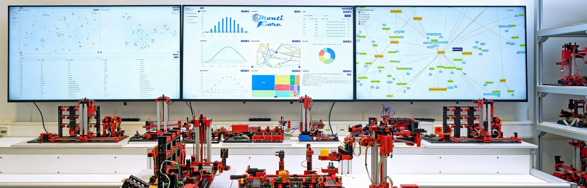
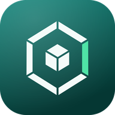
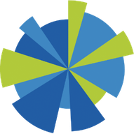
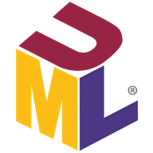
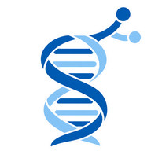

01Projects
12 entriesSoftware I have built or led — from generator frameworks and production information systems to agentic coding platforms.

-

nowESACA
European Sovereign Agentic Coding Appliance — a standardised, on-premises platform that runs AI coding agents inside an organisation’s own data centre: sandboxed agents, versionable configuration, a shared hub, benchmarks on your own repositories and a guided ticket-to-reviewed-code workbench. Air-gapped capable, no external API calls.
-

2018 — 2026MaCoCo
Management cockpit for controlling university chairs and institutes — finances, staff and projects in one multi-user information system, largely generated from MontiCore DSLs. Built jointly with the Chair of Management Accounting; in production at RWTH, with a companion Android time-tracking app.
-

2025Golden UML Model Set
A community-curated dataset of UML models, each paired with a natural-language description of the modelled domain. Crawled model collections are full of invalid and placeholder models; this one is reviewed, searchable on a public web platform, and grows through a structured contribution and review process — a benchmark for UML research, education and LLM evaluation.
-
2025
SE-Chatty
A teaching assistant for lecturers. Fed with scripts, books, slides and videos, it answers with lecture-specific depth, helps students train for exams with generated questionnaires, and shows lecturers which parts of the material are understood — and which aren’t.
-
2024 — 2026
ePHA
Electronic dissertation and habilitation repository. A model-driven application generated with MontiGem that supports the publishing process for dissertations and habilitations at RWTH; in production.
-
2020 — 2022
Ford Pro tool tracking
Pilot with the Ford Research & Innovation Center Aachen: an integrated information system that tracks tools and machines across vans and job sites via Bluetooth, GPS and AI — reminders for tools left behind, theft alerts, a live map and search by vehicle or tool. The web application was generated from UML models with MontiGem and field-tested by three trade companies around Cologne.
-
2018 — 2022
Agile Data Development
Model-driven tooling for a wind-turbine manufacturer (with WZL, MSE and Bewind): integrating agile and plan-driven development with data-based decision support, including generated digital-twin cockpits for parameter management in turbine engineering.
-
 2018 — 2024
2018 — 2024MontiGem
Generator framework for enterprise information systems, built on the MontiCore language workbench. Class diagrams and GUI models in, a complete web application out — applied across five domains, from university controlling to digital-twin cockpits.
-

2012 — 2016
-
GPT
SysML v2 Model Creator
Creates SysML v2 models from natural-language descriptions.
-
GPT
MontiCore Expert
Answers questions on grammars, symbol tables and generators in the MontiCore language workbench.
-
GPT
CD4A Class Diagram Creator
Writes class diagrams in CD4A, the MontiCore class-diagram language.